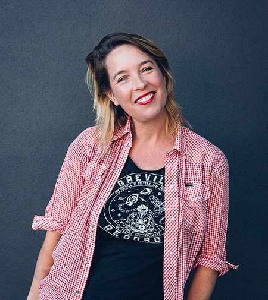

Emma Saunders is an award winning "formidable" (Realtime, 2010) Australian dance artist who works as a director, choreographer, dancer, educator, dance curator and producer. She graduated with a BA in Dance and Grad Dip Ed (Dance/Drama) from the University of Western Sydney (1996). Over the past 25 years she has honed her practice to develop an interest in the simplicity of dance and the complexity of choreography. Utilising a visceral, instinctive attack, her work is immediate, often working with humour, everyday movement, text, repetition, deconstruction, duration, outdoor sites, community and abstraction.
She has been shortlisted (top 3 in Australia) for two Australian Dance Awards. The first for ENCOUNTER (2020) — originally commissioned by Form Dance Projects and presented by Sydney Festival. Encounter was a large scale outdoor full-length site-specific dance work of joy in Prince Alfred Park, Parramatta (tagged #bestofthefest by Create NSW) and for the Four Winds Festival, Bermagui. Directed by Emma Saunders, Encounter involved a 52-piece live orchestra (WSYO), 16 dancers — 8 dancers from Western Sydney and 8 dancers from Fling Physical Theatre, an original 1hr composition by composers Jodi Phyllis (The Clouds) and Amanda Brown (The Go-Betweens), Miles Franklin nominee writer Felicity Castagna, and slam poet Pola Fanous.
Emma was also shortlisted for an Australian Dance Award for the Austinmer Dancing Project (1.1.18) — an en masse, outdoor site-specific project exploring the intersection of where community, site and dance can intersect. This project has had over 15,000 hits on YouTube and continues to remain an important part of the local cultural landscape as a moment where a sense of communal meaning was created through the experience of dancing together where we live. In 2015, Emma was also commissioned by Sydney Festival and Urban Theatre Projects where she created two other large scale outdoor site-specific dance projects, The Bankstown Dancing Project, working with a cross section of the Vietnamese ballroom community and pop musician Toby Martin (Youth Group).
Emma co-founded the award-winning Sydney based trio, The Fondue Set, alongside Jane McKernan and Elizabeth Ryan. The Fondue Set have created 7 full length works — Evening Magic Soft Cheese, Blue Moves, Love and Other Indoor Sports, Don't Stop 'Til You Get Enough, The Set (Up) and Green Room Award-winning No Success Like Failure — presented at the Sydney Opera House (2008) and Dance Massive, Arts House, Melbourne (2009), performed in the Melbourne International Arts Festival (The Bar, 2008), Sydney Festival First Night (The Hoofer, 2010), The Sideshow for ABC TV, The Studio (SOH), and representing Australia in the AJDX Japan/Australia Dance Exchange supported by the Australia Council and Create NSW. In 2008, they also received Australia Council funding to recontextualise their signature theatrical and humorous dance work within an international context, travelling and performing in London, Amsterdam, Brussels, Berlin and Vienna with a residency in Paris, alongside Australian dance artist Ros Crisp.
In 2021 Emma created and focused her practice on the WE ARE HERE Company — hi fi dance work made in lo fi ways — with most of the dancers from Encounter. With initial guidance and support from Form Dance Projects, the WE ARE HERE Company went on to make ALL THAT I AM RIGHT NOW (2021) for Parramatta Laneways — 10 short solo digital portraits in collaboration with Feras Shaheen and writer Felicity Castagna — Wanna Dance, a covid friendly public art/movement outdoor activation commissioned by City of Sydney in partnership with City People and Chris Fox Studios, and Radical Transparency (2022), presented by Form Dance Projects at Parramatta Riverside Theatres. They then remounted Encounter Sydney (2022) at the Sydney Opera House forecourt, Encounter Berry (2023) for OpenFields Festival, Encounter Gold (2023) for Bleach Festival (Gold Coast), Encounter Explosion (2024) for Fling Physical Theatre (Bega), and Infinity Bias (2024) for Form Dance Projects, Parramatta Riverside Theatre — and became resident company at leading dance research organisation Critical Path, Sydney (2025). Emma continues to mentor the WE ARE HERE Company and work on discrete projects as they arise.
Outside of the WE ARE HERE Company, Emma works as a freelance dance artist and directed I'm Trying Not To Sweat The Small Stuff on Austinmer Dance Theatre, IPAC, Wollongong, and made Don't Touch Me Or I'll Cry for AMPA's Bachelor of Dance students at NIDA. She also choreographed the award-winning film clip Fashion Model Art (featuring Sofi Tukker) and the single Bye Bye for iconic Australian female music group Haiku Hands, in collaboration with Australian award-winning female film director Jasmin Tarasin. Emma also choreographed The Hen House (Josipa Draisma / Sime Knezevic and Mara Knezevic), an award-winning fierce and funny musical that pays homage to the stories of European female migrant factory workers in 1960s and 70s Western Sydney.
Outside of her work as an artist, Emma was also the inaugural Dance Curator at Campbelltown Arts Centre (2008–2012) under Lisa Havilah (now CEO, Powerhouse Museum), where she curated over 40 new dance projects that examine community, location, exchange, culture, age and the interdisciplinary nature of making dance work with a range of local, national and international artists and frameworks, including the award-winning dance/art exhibition What I Think About When I Think About Dancing, co-curated with Lisa Havilah. For 10 years Emma taught Generative Performance Practice, Theatre Making and Movement at the University of Wollongong (2009–2019), then worked as a Community Cultural Development worker in Cultural Development, Wollongong City Council, developing the community based project Standing on the Ceiling as part of the 2022 Cultural Program, based in Port Kembla and utilising a range of local choreographers, composers and MCs. Emma also works with Merrigong's Strangeways ensemble and was choreographic consultant for the acclaimed site-specific work Sirens, by Merrigong Theatre Company, directed by Anne Louise Rentell.
Most recently, Emma has been leading Dancing On the Green at her local bowling club (@wombarrabowlo) — an extraordinarily fun, rollicking, monthly, hyperlocal dance project for everyone. It returns her professional practice front and centre back into her own community — using dance to bind us, offer solace, spark joy, and transform how we experience ourselves, each other, and our surroundings, if only for that glorious one hour. First Thursday of every month.